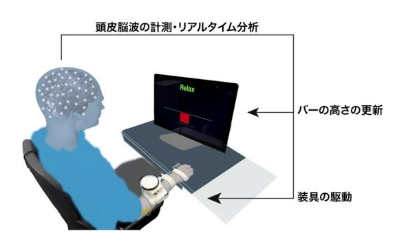
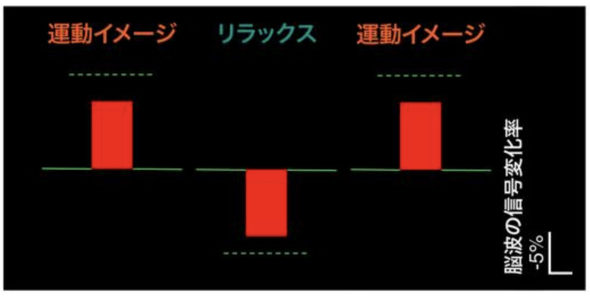
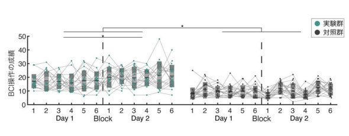
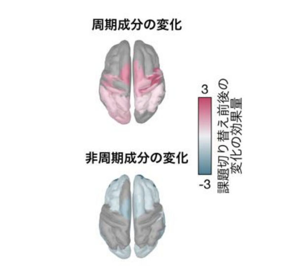
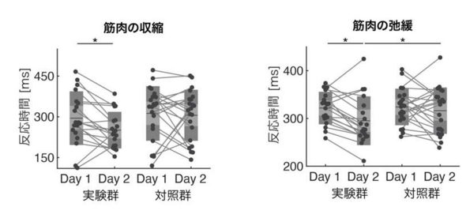

慶應義塾大学に所属する研究者らがPNASで発表した論文は、ブレイン・コンピュータ・インタフェース（BCI）を活用し、イメージトレーニング（イメトレ）中の脳状態を可視化することで、実際の運動能力を向上させることに成功した研究報告だ。
本研究では頭皮脳波計とAIを用いることで、脳内に電極を埋め込むことなく、脳内状態をリアルタイムで可視化することに成功した。
慶應義塾大學的研究團隊在 PNAS 發表論文，報告了一項透過運用腦機介面（BCI）將意象訓練中的大腦狀態視覺化，進而成功提升實際運動能力的實驗。
該研究透過使用頭皮腦波儀與 AI，成功實現了無需在大腦內植入電極，即可即時將腦內狀態視覺化。

圖1｜實驗裝置示意圖（プレスリリースより引用）
參與者佩戴高密度頭皮腦波計，右手安裝電動輔具，腦波經即時分析後同步更新螢幕上的紅色長條，並驅動輔具。
本研究が脳状態の可視化において着目したのが、「感覚運動リズム」と呼ばれる脳波成分だ。体がリラックスした安静時には神経細胞が同期して活動するため振幅が大きくなり、逆に運動の準備や実行した際には活動が脱同期化して振幅が小さくなる。
研究チームはこの性質を利用し、脳のオンとオフの状態を画面上の赤いバーの動きに変換して参加者に提示した。
該研究在大腦狀態視覺化方面所關注的是被稱為「感覺運動節奏」的腦波成分。當身體放鬆處於安靜狀態時，神經細胞會同步活動，因此振幅會變大；相反地，當準備或執行運動時，活動會呈現「去同步化」，導致振幅變小。
研究團隊利用此特性，將大腦的開與關狀態轉換成螢幕上紅條的移動，並呈現給參與者看。

圖2｜BCI 訓練畫面模式圖
運動意象時紅條向上延伸（大腦「開」），放鬆時向下延伸（大腦「關」），感覺運動節奏的強弱被即時視覺化。
実験では、高密度頭皮脳波計を装着した参加者の右手に電動装具を取り付けたうえで、画面のバーを見ながら、自らの意思で脳の状態を素早く切り替えてバーを目標位置へと動かす訓練を2日間行った。
その際、本物の脳波を提示されるグループと、偽の映像を見せられる対照グループに分け、二重盲検ランダム化比較試験による検証を実施した。
實驗中，佩戴高密度頭皮腦波儀的參與者右手安裝了電動輔具，並在觀看螢幕長條的同時，練習用自己的意志快速切換大腦狀態，使長條移動到目標位置，訓練為期兩天。
當時，研究將人員分為呈現真實腦波的組別，以及觀看他人腦波偽影像的對照組，並透過「隨機雙盲對照試驗」進行驗證。
その結果、本物の脳波を見て訓練したグループは、自らの意思で脳の状態を切り替える能力が有意に向上することが確認された。
さらに、実際の運動パフォーマンスにも好影響を与え、筋肉を素早く収縮させる反応時間や、力を抜いて弛緩させる際の反応時間も短縮されることが確認された。本技術を用いれば、脳そのものを直接鍛えるため、人間の能力を拡張できる可能性がある。
結果顯示，觀看真實腦波進行訓練的組別，其自主切換大腦狀態的能力有顯著提升。
此外，這也對實際的運動表現產生了正面影響，經確認肌肉快速收縮的反應時間，以及放鬆力量使其鬆弛時的反應時間皆有所縮短。透過這項技術，由於是直接鍛鍊大腦本身，未來極有可能實現擴展人類能力的可能性。

圖3｜兩天訓練中 BCI 操作成績的推移
實驗群（綠）的目標到達次數有顯著增加，對照群（黑）則未見同樣的提升。

圖4｜訓練後大腦廣泛區域的活動模式變化
周期成分（上）與非周期成分（下）的活動皆在 BCI 訓練後出現明顯改變。

圖5｜肌肉收縮與弛緩反應時間的變化
實驗群（左組）在 Day 1 → Day 2 間，收縮（左）與弛緩（右）的反應時間皆縮短，對照群則無此改善。